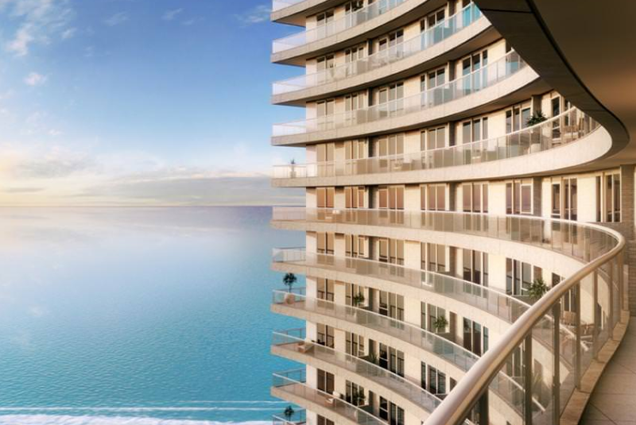
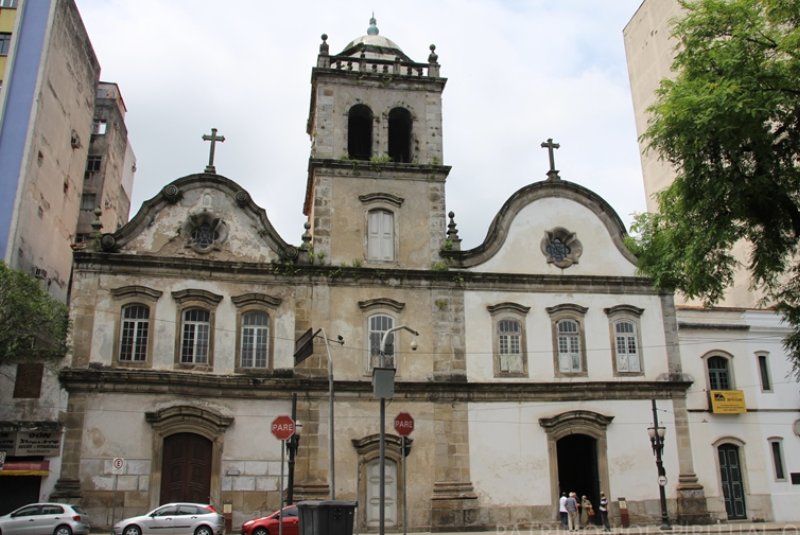

Um Mosaico Arquitetônico
A cidade de Santos destaca-se pela diversidade e vanguarda de sua arquitetura, refletindo as influências culturais de imigrantes que chegaram através do porto. Desde construções barrocas do século XVI até a arquitetura contemporânea do século XXI, a arquitetura santista é um testemunho da rica história da cidade. Cada estilo arquitetônico, dos chalés madeirenses à imponência do Edifício Unlimited Ocean Front, contribui para a identidade visual única de Santos. Essa mescla eclética de estilos não apenas enriquece a paisagem urbana, mas também conta a história multifacetada da cidade ao longo dos séculos.

Barroco
A arquitetura santista, um mosaico ao céu aberto, destaca-se pelo Barroco. A Ordem Terceira de Nossa Senhora do Carmo e a Igreja Santo Antônio do Valongo, do século XVI, exemplificam esse esplendor. Detalhes ornamentados, curvas sofisticadas e elementos sacros conferem uma elegância única. Essas construções não apenas testemunham o passado, mas também cativam com a riqueza cultural e a devoção que permeiam suas paredes. Santos Barroco é mais que arquitetura; é uma jornada visual pelas eras, preservando a magnificência de uma época em cada detalhe intricado.

Chalés Madeirenses
Os Chalés Madeirenses, herança dos imigrantes da Ilha da Madeira, adornam as encostas dos morros, especialmente nos bairros de Ponta da Praia, Embaré, Macuco e Estuário. Essas moradias ainda presentes são mais do que simples construções; são testemunhas vivas da influência cultural que os madeirenses trouxeram consigo por volta de 1885. Os Chalés, com seu madeiramento sobre pedras fixas e terraços, não só compõem a paisagem urbana de Santos, mas também contam a história de uma comunidade que moldou a identidade arquitetônica da cidade.

Estilo Belas-artes
A arquitetura santista é enriquecida pelas esplêndidas obras de Belas Artes, notadamente o Prédio dos Correios e Telégrafos (1924) e a imponente Bolsa Oficial de Café , agora casa do Museu do Café. O Prédio dos Correios destaca-se pela grandiosidade de seu design, enquanto a Bolsa Oficial de Café, com seu pórtico ornamentado e colunas dóricas, é um testemunho da opulência associada ao comércio de café. Ambas não apenas são marcos arquitetônicos, mas também preservam a rica história econômica e cultural de Santos, convidando visitantes a explorar sua grandiosidade.

Elegância dos Estilo Luís XV
O Estilo Luís XV revela-se na grandiosidade do Palácio José Bonifácio (1927), uma construção repleta de simbolismos relacionados à maçonaria e personagens históricos como José Bonifácio. Para além de sua arquitetura refinada, o palácio é um tesouro de significados, com estátuas de Hermes e Minerva na entrada, representando comércio, indústria e sabedoria. A presença de elementos maçônicos sugere uma ligação profunda com figuras que moldaram a história, como Bonifácio e Dom Pedro I. Este edifício não é apenas uma expressão de estilo, mas uma porta de entrada para a compreensão das influências culturais e históricas que moldaram Santos.

Modernismo Orgânico
O Modernismo Orgânico atinge sua expressão máxima no Edifício Verde Mar (1957), uma obra que personifica esse estilo. Projetado para a exigente burguesia paulistana, o edifício destaca-se por sua decoração orgânica, uma fusão equilibrada de formas e elementos naturais. Com 168 apartamentos distribuídos em 14 andares, o edifício não apenas reflete a sofisticação da época, mas também oferece um retiro luxuoso à beira-mar. O Edifício Verde Mar não é apenas uma estrutura arquitetônica, mas uma representação viva do Modernismo Orgânico, incorporando a harmonia entre o homem e a natureza em cada detalhe.

Arquitetura Contemporânea
Na vanguarda da arquitetura contemporânea, o Edifício Unlimited Ocean Front desponta como um ícone em Santos. O edifício destaca-se pela ousadia arquitetônica com o seu formato irregular, conferindo-lhe uma identidade única. Janelas de grandes dimensões são estrategicamente integradas para capturar luz natural abundante, proporcionando ambientes mais iluminados e arejados. A interligação fluida entre os espaços reforça a abordagem contemporânea, enquanto estruturas e acabamentos feitos com materiais industrializados adicionam uma estética moderna e sustentável. O Unlimited Ocean Front não apenas representa o presente, mas também molda a narrativa visual do futuro arquitetônico de Santos.

Outros Estilos
Concluindo o guia arquitetônico, Santos exibe uma rica tapeçaria histórica por meio de diversos estilos, desde o encantamento Art Nouveau na Pinacoteca Benedito Calixto (1900) até a imponência Neomanuelina do Real Centro Português (1901). A elegância Neocolonial do Colégio Escolástica Rosa (1908), a sofisticação Art Déco na Sociedade Humanitária dos Empregados do Comércio (1931), o estilo Eclético no Teatro Guarani (1882), o Neogótico da Casa Acastelada Construção (1886), e a exuberância Neoclássica da Casa da Frontaria Azulejada (1865) formam um panorama cativante. Acrescentando a essa diversidade, encontramos o Modernismo orgânico representado pelo Edifício Verde Mar (1957). Esta variedade arquitetônica convida a uma envolvente viagem no tempo, proporcionando uma experiência visual única que reflete a pluralidade cultural e histórica da encantadora cidade de Santos.